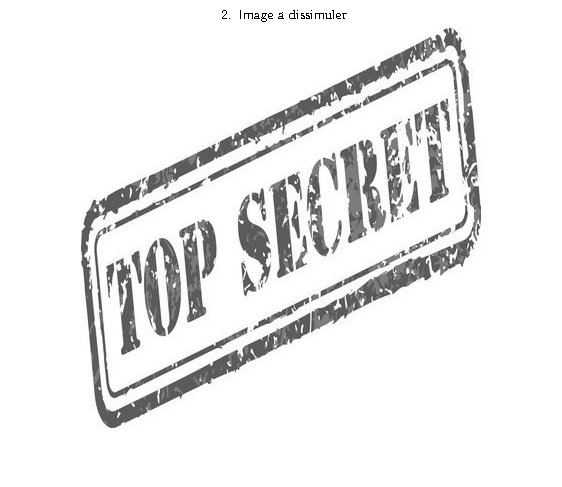
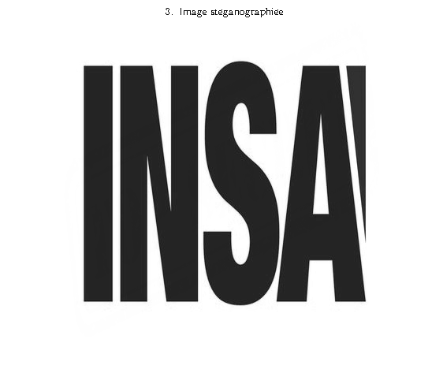
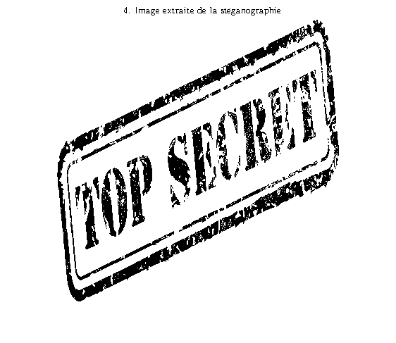
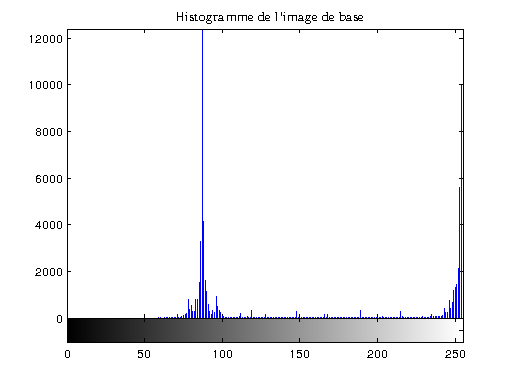
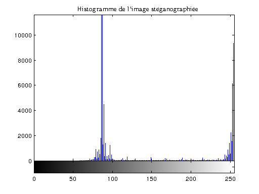

Stéganographie par substitution de LSB
clc;
clear all;
close all;
imageDeBase = 'images_SteganographieLSB/insa.jpg'
imageADissimuler = 'images_SteganographieLSB/secret.jpg'
x = imread(imageDeBase);
y = imread(imageADissimuler);
x = rgb2gray(x);
y = rgb2gray(y);
n=1;
S = uint8(bitor(bitand(x,bitcmp(2^n-1,8)),bitshift(y,n-8)));
E = uint8(bitand(255,bitshift(S,8-n)));
origImg = double(y);
distImg = double(E);
[M, N] = size(origImg);
distImg1=imresize(distImg,[M N]);
erreur = origImg - distImg1;
EQM = sum(sum(erreur .* erreur)) / (M * N);
if(EQM > 0)
PSNR = 10*log10(M*N./EQM);
else
PSNR = 99;
end
disp('PSNR (distorsion) du message issu de l''image :')
disp(abs(PSNR))
disp('L''erreur quadratique moyenne (EQM) est : ')
disp(abs(EQM))
figure(1),imshow(x);title('1. Image de base (cover)', 'Interpreter','Latex')
figure(2),imshow(y);title('2. Image \''a dissimuler', 'Interpreter','Latex')
figure(3),imshow((abs(S)),[]);title('3. Image st\''eganographi\''ee','Interpreter','Latex')
figure(4),imshow(real(E),[]); title('4. Image extraite de la st\''eganographie','Interpreter','Latex')
figure(5),imhist(x); title('Histogramme de l''image de base','Interpreter','Latex')
figure(6),imhist(S); title('Histogramme de l''image st\''eganographi\''ee','Interpreter','Latex')
imageDeBase =
images_SteganographieLSB/insa.jpg
imageADissimuler =
images_SteganographieLSB/secret.jpg
PSNR (distorsion) du message issu de l'image :
10.6027
L'erreur quadratique moyenne (EQM) est :
1.3927e+04
    